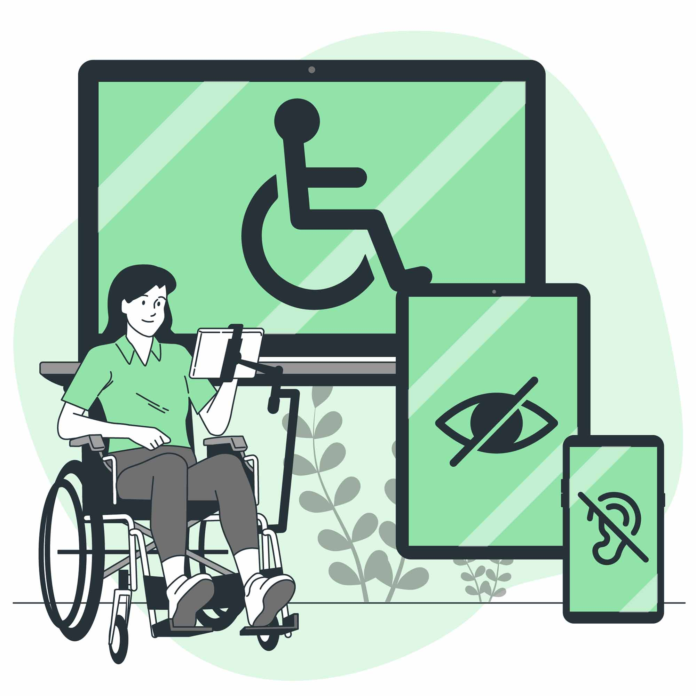

Tecnologias Assistivas
As tecnologias assistivas desempenham um papel crucial na melhoria da qualidade de vida de pessoas com deficiência, proporcionando maior autonomia e participação social.
- Leitores de Tela: Ferramentas que convertem texto em fala para auxiliar pessoas com deficiência visual.
- Próteses Inteligentes: Dispositivos que simulam funções motoras, ajudando na mobilidade.
- Softwares de Reconhecimento de Voz: Aplicativos que permitem a navegação e o controle de dispositivos por comandos de voz.

Políticas de Inclusão
Políticas de inclusão garantem direitos e oportunidades para pessoas com deficiência, promovendo um ambiente mais igualitário.
- Legislação de Acessibilidade: Leis que estabelecem normas para a adaptação de espaços públicos e privados.
- Programas de Empregabilidade: Iniciativas que incentivam a contratação de pessoas com deficiência.
- Educação Inclusiva: Políticas que promovem o acesso à educação para todos, independentemente de limitações.

Apoio Psicossocial
O suporte emocional e social é essencial para o bem-estar de pessoas com deficiência, ajudando na construção de uma vida mais plena e integrada.
- Grupos de Apoio: Espaços para troca de experiências e suporte comunitário.
- Atendimento Psicológico: Acompanhamento especializado para lidar com desafios emocionais.
- Programas de Inclusão Social: Iniciativas que promovem a participação em atividades culturais e recreativas.